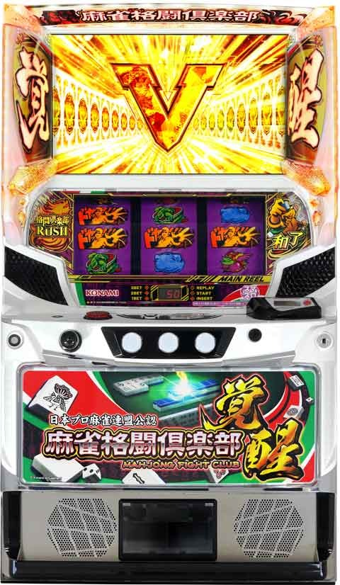

L麻雀格闘倶楽部 覚醒

天井情報
770G(最大960G)+α AT当選
裏覚醒準備モード時は最大960G+αで、
次回裏覚醒モード。
リセット時
160G+αまでにAT当選80%
［有利区間切れ条件］
不明
狙い目
背景(夕方、夜)や、モード示唆(高宮プロ解説で引き戻し以上)、ツモ運MAP(3/4/6/8戦はツモ運が高い傾向)などで狙い目の調整が必要。
何も示唆なければボーダー上げて、強い示唆あればボーダー下げる感じです。
ボーダー調整は30-50G程度？
ゾーン狙い時の調整有無は不明。
[リセット狙い]
積極派 0Gから
慎重派 30Gから
[天井狙い]
580Gから
[ゾーン狙い]
前回100G以内後
0Gから 160G後の対局でテンパイするまで。
前回100G-230G当選後
130Gから 160G後の対局でテンパイするまで。
前回160-230G当選後 2回連続後
70Gから 160G後の対局でテンパイするまで。
前回160-230G当選後 3回連続後
50Gから 160G後の対局でテンパイするまで。
引き戻しゾーン狙い
340Gから 390G後の対局でテンパイするまで。
覚醒モード狙い
前回850G以上ハマり 160G後の対局でテンパイするまで。
【麻雀覚醒モード狙い時の押し引き】
主にリセット狙い時の手順です。
慎重派は30G回ってから。
完走後はリセット時と似た挙動になるけど、リセットよりは覚醒モードに行きやすい様です。
応用で覚醒モードループ中の押し引きも出来るかも？？
①リセット狙い(ガックンあり)
リセ0Gから リセなら160G+αで当選する。
AT後は1周期の対局示唆を確認。
リセ後は覚醒モードループ弱め。
・覚醒ランプ右or両方
・親番
・日本夜ステージ
→続行 覚醒モード天井まで？
・「闘将戦」「桜花戦」「高段位戦」
→1周期消化して対局中の示唆と、2周期の対局開始時の示唆で押し引き。弱そうならやめ。
・それ以外
→対局消化せずやめ。
②対局中の示唆(1周期消化中)
1周期からツモ運レベル高いのは高シナリオ期待となるため、覚醒モードの可能性が上がる。
以下の場合は覚醒モード天井まで？
・解説高宮プロ 引き戻し以上
・解説沖プロ 覚醒モード
・日吉プロ セリフ「風を感じてください」 裏覚醒モード
・テンパイ時にPUSH押して漢字5文字以上ならツモ運レベル3以上
・テンパイ前にプロ雀士がポン、チーする
・テンパイ後の待ち牌が3面待ち以上
参考記事 必勝期待値クマぱぱ
やめ時
周期準備中(対局決定)見てやめか、即やめ。
770G+α(実質850G以上？)を超えた場合は、次回裏覚醒モードのため、160G+αまで。
究極Mリーグ終了後は覚醒モード濃厚。
エンディング終了後も覚醒モード濃厚。
周期準備中の覚醒ランプ
右のみ大点灯は、引き戻し以上
左右完全点灯は、覚醒モード期待大
周期準備中にオレンジマン覚醒演出で、覚醒モード濃厚。
その他
覚醒モードに期待できる状況
{kind=link}
ゾーン狙いについて
{kind=link}
参考元
基本情報
- メーカー: コナミアミューズメント
- 機械割: 97.5% 〜 110.0%
- 導入開始日: 2023年09月19日（火）
- ゲーム性概要: 通常時はリプレイやレア役でテンパイを目指し、テンパイ後対局で和了ることができればATに突入。シリーズおなじみの霊獣アタックをはじめ、新規の究局Mリーグなど強力なトリガーも多数搭載されている。


打ち方
打ち方・小役
打ち方（小役狙い）
［最初に狙う絵柄］

左リール上段付近にBARを目押し。基本的にスイカやチェリーはリプレイフラグなのでオールフリー打ちでも問題ないが、成立役をしっかりと把握するため小役狙いを推奨だ。
［BAR下段停止］ 成立役：ハズレorリプレイorベルorチャンス目A

［角チェリー停止］ 成立役：弱チェリーor強チェリー

［スイカ上段停止］ 成立役：スイカorチャンス目B

［レア役の停止形］

［ドヤ停止］ 通常時〜ATまで様々なタイミングで狙えカットインが発生。全リールにドヤを目押しして、停止数が多いほどチャンスとなる。

［究極の一手］ 通常時のテンパイ後やAT中の格闘倶楽部バトル中に、中リールを狙えカットインで究極の一手が止まれば究極Mリーグ（スペシャルAT）突入!?

解析情報通常時
小役関連
小役確率
| 役 | 確率 |
|---|---|
| スイカ | 1/150.0 |
| 弱チェリー | 1/99.3 |
| 強チェリー | 1/595.8 |
| チャンス目 | 1/277.7 |
| レア役＋ドヤ停止合算 | 1/44.9 |
10枚ベル確率（順押し）
10枚ベルに設定差が存在する。
モード
通常モードごとの天井
| モード | 天井 | （裏）覚醒移行期待度 |
|---|---|---|
| 通常 | 770G＋α | ◯ |
| 引き戻し | 390G＋α | △ |
| 裏覚醒準備 | 960G＋α | ◎ |
| 覚醒 | 160G＋α | 80%以上（ループ率） |
| 裏覚醒 | 160G＋α | 90%以上（ループ率） |
※天井は規定ゲーム数到達後の対局でATに突入
裏覚醒準備モード滞在時は次回裏覚醒モード移行濃厚だ。
テンパイ前対局
テンパイ前対局概要
リプレイやレア役を引けばテンパイが近づくゲーム性。様々なイベントでツモ運や翻数（AT当選時の初期ゲーム数優遇）を上げながらテンパイさせればテンパイ後対局へ移行する。

テンパイ前対局
| 項目 | 内容 |
|---|---|
| 継続ゲーム数 | 25G＋α |
| テンパイ後対局移行期待度 | 約43% |
| 消化中の抽選 | リプレイ・レア役で対局が有利に進む |
リプレイ・レア役最大6回でテンパイに到達する。
「有効牌高確」 レア役・ベル・1枚役成立時の一部で、有効牌高確への移行が抽選される。有効牌高確中はリプレイやレア役以外でも約1/2で有効牌を獲得可能だ。

「ずっと俺のツモ」 強レア役成立時の一部で移行する、AT当選濃厚状態。

特殊戦
特殊戦が発生すればツモ運や翻数が優遇。パターンによって期待度が変化する。

イベントモード
イベントモード一覧
| イベントモード | 特徴 |
|---|---|
| ナイトプールモード | 翻数＆ツモ運アップのダブル高確状態 |
| テツマンチャンス | 対局終了後の一部で突入する大チャンスの対局 |
| 雀牌モード | 有効牌の高確状態 |
| バカンスモード | 翻数アップの高確状態 |
| 特訓 | ツモ運アップの高確状態 |
| 役満戦 | 役満をかけた対局 |
| 昇龍チャレンジ | AT直撃のチャンスゾーン |
［ナイトプールモード］

ナイトプール性能
| 項目 | 性能 |
|---|---|
| 滞在ゲーム数 | 15G |
| 消化中の抽選 | 全役で翻数＆ツモ運アップ抽選 |
| テンパイ期待度 | 100% |
| ツモ運レベル | 平均でレベル3まで上昇 |
［テツマンチャンス］

テツマンチャンス性能
| 項目 | 性能 | |
|---|---|---|
| 滞在ゲーム数 | 25G＋α （有効牌獲得ゲーム分延長） | |
| 消化中の 抽選 | リプレイ・レア役 | 有効牌獲得抽選 |
| 消化中の 抽選 | レア役・ベル・1枚役 | 有効牌高確抽選 |
| 消化中の 抽選 | 強レア役 | 和了抽選 |
| テンパイ期待度 | 100% | |
| ツモ運レベル | レベル3以上 | |
| その他 | テンパイ後対局で敗北しても 約50%でテツマンチャンス継続 |
テンパイ後対局→AT非当選が続くほど、テツマンチャンスに突入しやすい。
［雀牌モード］

雀牌モード性能
| 項目 | 性能 |
|---|---|
| 滞在ゲーム数 | 10G＋α （有効牌獲得ゲーム分延長） |
| 消化中の抽選 | 全役で有効牌＆供託棒獲得抽選 |
| テンパイ期待度 | 約80% （対局移行後のテンパイ含む） |
| ツモ運レベル | レベル2以上 |
| その他 | 夜背景は供託棒高確率 |
供託棒は1本獲得するごとにATゲーム数が＋1Gされる。
［バカンスモード］

バカンスモード性能
| 項目 | 性能 |
|---|---|
| 滞在ゲーム数 | 32G |
| 消化中の抽選 | 全役で翻数アップ抽選 |
| 消化中の抽選 | レア役 （特にスイカ） は ナイトプール移行のチャンス |
| テンパイ期待度 | 100% |
| ツモ運レベル | レベル2以上 |
| その他 | 13翻（役満）到達でテンパイ後対局へ |
［特訓］

特訓性能
| 項目 | 性能 |
|---|---|
| 滞在ゲーム数 | 22G |
| 消化中の抽選 | 全役でツモ運アップ抽選 |
| テンパイ期待度 | 100% |
| ツモ運レベル | 平均でレベル3まで上昇 |
| その他 | ツモ運MAXでAT確定 |
［役満戦］

役満戦性能
| 項目 | 性能 |
|---|---|
| 滞在ゲーム数 | 20G＋α （ハズレ・リプレイで終了） |
| 消化中の抽選 | ツモ運・成立役を参照して和了抽選 |
| テンパイ期待度 | 100%（役満でのテンパイ） |
| ツモ運レベル | レベル4以上 |
| その他 | レア役成立で和了濃厚 |
対局準備中のベルで突入抽選がおこなわれる。
［昇龍チャレンジ］

昇龍チャレンジ性能
| 項目 | 性能 |
|---|---|
| 滞在ゲーム数 | 6G |
| 消化中の抽選 | 1Gごとに満貫から役満まで報酬が変化し、 レア役成立で該当する翻数での和了確定。 リプレイでも和了のチャンスあり |
| 和了期待度 | 約33% |
| その他 | タイトルが覚醒ならオール役満 |
| その他 | 導入ゲームのレア役はアツい!? |
テンパイ後対局
テンパイ後対局概要
テンパイ前対局でテンパイすると移行。ここで和了ることができればATが確定する。5段階のツモ運レベルで、テンパイ後のリプレイ・レア役・ドヤ絵柄停止時の和了期待度が変化。ツモ運はシナリオによって管理（シナリオマップはメニュー画面から確認可能）。イベントステージ・テツマンチャンス・役満戦はシナリオではなく、専用のツモ運抽選がおこなわれる。

テンパイ後対局
| 項目 | 内容 |
|---|---|
| 継続ゲーム数 | 20G＋α |
| AT当選期待度 | 約25% |
| 消化中の抽選 | リプレイ・レア役で和了抽選 |
| その他 | 和了時の翻数がATゲーム数に直結 |
「ツモ運シナリオ」

ツモ運レベル別の期待度
| ツモ運レベル | 期待度 |
|---|---|
| レベル1（青） | 強レア役を引ければチャンス |
| レベル2（黄） | レア役以上でチャンス |
| レベル3（緑） | チャンス |
| レベル4（赤） | 大チャンス |
| レベル5（虹） | 和了確定 |
※ツモ運シナリオマップはメニュー画面から確認可能
（裏）覚醒モード
覚醒モード概要
初当りAT確率が大幅にアップする強力なモード。さらに期待獲得枚数約3200枚の裏覚醒モードも存在する。

覚醒モード
| 項目 | 覚醒モード | 裏覚醒モード |
|---|---|---|
| 初当り確率 | 約1/99.0 | 約1/30.2 |
| ループ率 | 80%以上 | 90%以上 |
| 天井 | 160G＋α | 160G＋α |
| その他恩恵 | 親番比率アップ 約1/4で親番 | 親番比率アップ 約1/4で親番 |
覚醒モードの期待獲得枚数 ※シミュレーション値
| 獲得枚数 | 分布 |
|---|---|
| 500枚未満 | 23.0% |
| 500～1000枚未満 | 21.3% |
| 1000～1500枚未満 | 16.6% |
| 1500～2000枚未満 | 11.8% |
| 2000～2500枚未満 | 9.6% |
| 2500枚以上 | 17.7% |
解析情報ボーナス時
究局Mリーグ（スペシャルAT）
究局Mリーグ概要
継続率80〜95%を誇る本機最強のスペシャルAT。終了しても覚醒モードへ突入するため早い引き戻しに期待できる。


究局Mリーグ概要性能
| 項目 | 性能 |
|---|---|
| 滞在ゲーム数 | 12G/セット |
| 獲得枚数 | 約100枚/セット |
| 継続率 | 約80%／約90%／約95% |
| 消化中の抽選 | 継続率による継続抽選 |
| 消化中の抽選 | 漏れた場合はリプレイ・レア役で 勝利書き換え抽選 |
Mリーグボーナス
究局Mリーグで13人すべてを倒すと突入する、20Gの擬似ボーナス。消化中はレア役で究局Mリーグの勝利ストックを抽選していて、ボーナス消化後は再び究局Mリーグへ移行する。

消化中の書き換え＆ストック抽選
各ラウンド開始時に継続抽選がおこなわれ、消化中は非継続だった場合に勝利書き換えを、継続だった場合は勝利ストックを抽選。Mリーグボーナス中も継続時と同じ抽選値で勝利ストックを抽選する。 書き換えはリプレイとレア役時に抽選され、漏れた場合でも1R内にレア役なら計2回、リプレイは計4回引けば勝利書き換えが確定する。
継続確定後の継続ストック当選率
| 役 | 当選率 |
|---|---|
| 弱チェリー・スイカ | 約33% |
| チャンス目・強チェリー | 100% |
AT/格闘倶楽部ラッシュ
格闘倶楽部ラッシュ概要
ゲーム数管理型のATで、消化中はSP対局（高継続対局 or 継続確定対局）、CZ（霊獣アタック）経由のゲーム数上乗せを抽選。セット終了後の対局（獲得倶楽部バトル）で勝利すれば次セットへ継続。対局勝利次の一部でスペシャルAT「究局Mリーグ」へ突入する。

格闘倶楽部ラッシュ（AT）性能
| 項目 | 内容 |
|---|---|
| 継続ゲーム数 | 和了時の翻数で変化（最低10G） |
| 1Gあたりの純増 | 約8枚 |
| 上乗せ抽選 | SP対局・霊獣アタック （リプレイ・レア役・ドヤ停止で抽選） |
| 高確移行抽選 | ハズレ（1枚役）の一部で抽選 |
| セット終了後 | 格闘倶楽部バトルへ移行 |
翻数別のATゲーム数
| 役 | 子 | 親 |
|---|---|---|
| 満貫 | 10G | 15G |
| 跳満 | 15G | 25G |
| 倍満 | 20G | 30G |
| 三倍満 | 30G | 45G |
| 役満 | 40G | 60G |
| 二倍役満 | 80G | 120G |
※テンパイ後対局・格闘倶楽部バトルで和了った時の翻数
初当り時の翻数が満貫（10G）かつ、ATを駆け抜けた場合、その後に突入する格闘倶楽部バトルは必ず勝利する。 ※ATが10Gのみで終了することはない
覚醒チャレンジ
10G継続の役満ループモード突入をかけたチャンスゾーン。レア役・ドヤ3個以上停止で成功濃厚だ！

AT中の上乗せ要素当選確率
| 上乗せ要素 | 確率 |
|---|---|
| 霊獣アタック | 約1/55 |
| SP対局 | 約1/94 |
| 合算 | 約1/35 |
［高確中］霊獣アタック・SP対局当選率
| 役 | 霊獣アタック | SP対局 | トータル |
|---|---|---|---|
| ドヤ1個 | 4.0% | 44.0% | 48.0% |
| ドヤ2個 | 1.0% | 78.0% | 79.0% |
| ドヤ3個 | 1.0% | 99.0% | 100% |
| ドヤ4個 | 40.0% | 60.0% | 100% |
| 弱チェリー | 15.0% | 40.0% | 55.0% |
| スイカ | 3.0% | 55.0% | 58.0% |
| チャンス目 | 40.0% | 60.0% | 100% |
| 強チェリー | 40.0% | 60.0% | 100% |
※SP対局ストック中のSP対局はSP対局Vに昇格
チャンス目や強チェリー、ドヤ3個以上は内部状態不問で霊獣アタック以上が確定する。
霊獣アタック当選契機別の種類
| 契機 | 霊獣アタックの種類 |
|---|---|
| チャンス目 | 青龍or黄龍or麒麟 |
| 強チェリー | 黄龍or麒麟 |
| ドヤ4個 | 麒麟 |
格闘倶楽部バトル（継続対局）
格闘倶楽部バトル
AT継続をかけたおなじみの継続バトル（16G＋α継続）。リプレイ・ドヤ図柄・レア役で和了を抽選。SP対局ストック所持時はSP対局に発展する。

格闘倶楽部バトル性能
| 項目 | 性能 |
|---|---|
| 滞在ゲーム数 | 16G＋α |
| 消化中の抽選 | リプレイ・レア役・ドヤ絵柄停止で勝利抽選 |
| 消化中の抽選 | 勝利でATへ復帰 |
| 消化中の抽選 | 強チェリーは和了濃厚 |
| その他 | 九段の雀士が面子にいると高配当、 二人なら役満対局 |
SP対局性能
| 項目 | 性能 |
|---|---|
| 滞在ゲーム数 | 10G＋α |
| 消化中の抽選 | リプレイ・レア役・ドヤ絵柄停止で勝利抽選 |
| 消化中の抽選 | 勝利でATへ復帰 |
| 消化中の抽選 | 対応レア役で勝利すれば特化ゾーンも確定 |
霊獣アタック（CZ）
霊獣アタック概要
霊獣（6種類）に対応した役を引けばゲーム数上乗せとなる1G完結のCZだ。

霊獣アタックごとの特徴
| 霊獣 | 対象役 | 成功時の恩恵 |
|---|---|---|
| 白虎 | チャンス目 | ＋100G |
| 玄武 | スイカ | ＋100G |
| 朱雀 | チェリー | ＋50 or 100G |
| 青龍 | リプレイ | ＋30 or 50 or 100G |
| 黄龍 | 全役 | ＋10 or 20 or 300 or 50 or100G |
| 麒麟 | 全役 | ＋50 or 100G |
［黄龍］

［朱雀］

［麒麟］

SP対局
SP対局概要
継続期待度が大幅にアップするSP対局と継続確定のSP対局Vの2種類。SP対局は 10G＋α以内にリプレイorレア役を引けば勝利 となる。画面に表示されている対象のレア役を引いた場合は、勝利だけでなく「覚醒チャレンジ」or「和了乱舞」を獲得できる。
［SP対局ストック］ ストック時にVが表示されれば勝利確定のSP対局Vだ。SP対局ストック中に再度、SP対局をストックすると突入する。

［SP対局］

もちろんほかにも多彩な組み合わせが存在する。
SP対局一覧
| SP対局 | 対象レア役 | 勝利時の 恩恵など |
|---|---|---|
| りおみんにおまかせ | チェリー・スイカ | － |
| 格闘倶楽部スピリッツ | チェリー・スイカ | 倍満以上 |
| 時を超える絆 | チェリー・チャンス目 | － |
| ビューティーペア | チェリー・チャンス目 | 倍満以上 |
| クマクマセレブ | スイカ・チャンス目 | － |
| 強敵（ライバル） | スイカ・チャンス目 | 倍満以上 |
| レジェンド | 全レア役 | － |
| 牌×ガールズ | 全レア役 | 倍満以上 |
| ドラを愛しドラに愛された姉妹 | 全レア役 | 勝利濃厚 |
| 沖 | 全レア役 | 勝利濃厚 |
| ともかりん | ランダム | 三倍満以上 |
ともかりんは対象レア役がランダムなので、発生時は液晶に表示されるレア役をチェックしておこう。
和了乱舞（特化ゾーン）
和了乱舞概要
10G/セット＆継続率約84%のST型特化ゾーン。ゲーム数上乗せをするごとに10Gが再セットされる。

和了乱舞の性能
| 項目 | 内容 |
|---|---|
| 当選契機 | SP対局勝利時の一部 |
| 継続ゲーム数 | 10G/セットのSTタイプ |
| ST再セット条件 | ゲーム数上乗せ |
| 消化中の抽選 | ベル・1枚役で上乗せのチャンス、 リプレイ・レア役は上乗せ確定 |
強チェリーなら＋30G以上が確定する。
役満ループモード
役満ループモード概要
小島武夫が登場する役満和了濃厚のモード。約50%で同モードが継続する。

演出情報
通常時
周期準備中
3G＋α滞在し、成立役や滞在モードを参照してイベントモード移行を抽選。配牌の段階でテンパイしていれば天和チャンス、次ゲームでリプレイかレア役を引けば役満和了が確定する。和了れなかった場合でもダブルリーチとなるため、AT当選のチャンスは継続する。
周期準備性能
| 項目 | 内容 |
|---|---|
| 継続ゲーム数 | 3G＋α |
| 消化中の抽選 | イベントモード移行を抽選 |
| 消化中の抽選 | レア役成立でチャンス （ベルで役満戦を抽選） |
| イベントモード期待度 | 約30% |
滞在モードを示唆する演出も存在する。
背景別の示唆
| 背景 | 示唆 | |
|---|---|---|
| 日本以外 | 昼 | デフォルト |
| 日本以外 | 夕 | 次回イベントモード |
| 日本以外 | 夜 | テツマンチャンスが近い |
| 日本 | 昼 | ツモ運レベル2以上 |
| 日本 | 夕 | 次回イベントモード＋ツモ運レベル2以上 |
| 日本 | 夜 | 対局勝利（AT当選）が近い |
モード示唆
対局開始時の覚醒ランプ点灯パターンや解説・実況演出、対局中の沖ボイス（対局中にヒソヒソとささやく）で引き戻しモードや覚醒モード滞在が示唆される。
対局開始時の覚醒ランプごとの示唆
| パターン | 示唆 |
|---|---|
| 右（醒）のみ大点灯 | 通常モード否定 |
| 左右の完全点灯 （文字がはっきり表示される） | 覚醒or裏覚醒モード滞在の可能性大 |
| オレンジマン覚醒+左右赤点灯 | 覚醒or裏覚醒モード滞在 ＋当該対局勝利濃厚 |
| オレンジマン覚醒+左右紫点灯 | 裏覚醒モード滞在 ＋当該対局勝利濃厚 |
※覚醒ランプが大きく点灯するほど覚醒モード滞在期待度アップ
引き戻しモード以上示唆演出
| 演出 | 内容 |
|---|---|
| 対局中の解説者 | 高宮プロ |
対局中の沖ボイス示唆
| ボイス | 示唆 |
|---|---|
| 裏覚醒入ってますよ | 裏覚醒モード濃厚 |
| マジか！すっげー、あんた神？ | 裏覚醒モード濃厚 |
| お主も悪よのー | 覚醒モードor裏覚醒モード濃厚 |
| お客さん、何かの気配がしますよ | 覚醒モードor裏覚醒モード濃厚 |
| ざわざわ… | 覚醒モードor裏覚醒モード濃厚 |
| 上（うえ）なんじゃないの？ | 覚醒モードor裏覚醒モード濃厚 |
| 当たれ、当たれ、当たれー | 当該対局勝利濃厚 |
| 今夜は焼肉すか、それとも？ | 当該対局勝利濃厚 |
| くっくくくっ、苦しい、、、 | 裏覚醒準備モード濃厚 |
| 引くことも重要ですよー | 裏覚醒準備モード濃厚 |
実況・解説の示唆
| パターン | 示唆 |
|---|---|
| 日吉プロ実況の →虹文字「風を感じてください」 | 裏覚醒モード濃厚 |
| 沖プロ | 当該対局でAT非当選なら 覚醒モード濃厚 |
実況の掛け合い
| パターン | セリフ内容 |
|---|---|
| 高宮プロ →日吉プロA | 麻雀で一番大事なことはなんですか？ →麻雀を楽しむことだと思います |
| 高宮プロ →日吉プロB | 今後の目標があれば教えてください →麻雀実況者として更に麻雀は”面白い”を伝えたいですね |
| 高宮プロ →日吉プロC | 麻雀初心者の方へアドバイスをお願いします！ →風を感じて下さい！ |
| 日吉プロ →高宮プロ | 高宮プロが解説者として出る時は、 良いモードに期待できるそうです→よろしくお願いします |
| 日吉プロ →沖プロ | 沖プロが解説者として出現すれば大チャンスみたいですね →パチスロ界の麻雀サンバイザー！沖ヒカルでございます |
実況の掛け合いごとの示唆内容
| パターン | 示唆 |
|---|---|
| 高宮プロ→日吉プロA | 引き戻しモード以上 |
| 高宮プロ→日吉プロB | 当該勝利or覚醒モード以上 |
| 高宮プロ→日吉プロC | 裏覚醒モード濃厚 |
| 日吉プロ→高宮プロ | 当該勝利or覚醒モード以上 |
| 日吉プロ→沖プロ | 当該勝利or覚醒モード以上 |
［覚醒ランプ］

対局決定のタイミングで、液晶左右の覚醒ランプが点灯した場合はパターンで覚醒モード滞在期待度を示唆。 オレンジマン覚醒は発生した時点で当該対局勝利（AT当選）濃厚かつ、覚醒モード以上濃厚。紫点灯なら裏覚醒モード濃厚となる。
［解説に高宮プロ］

対局中の解説として登場するのは、岡田プロ・和久津プロ・伊達プロのいずれかがデフォルト。高宮プロが登場すると引き戻しモード以上が確定する。
［実況・解説のセリフ］

高ツモ運示唆演出
| No. | 演出 |
|---|---|
| 1 | 特殊戦発生 |
| 2 | 対局準備中に“伊達朱里紗プロにお任せ”発生 |
| 3 | 対局準備中に“プチプロカート”発生 |
| 4 | 対局中に対戦プロ雀士の鳴きが発生 |
| 5 | テンパイ時にチャンスボタンを押したときの タイトルランプ点灯数が多い |
| 6 | テンパイ時の待ち牌が多い |
［特殊戦］

高段位戦・豪華絢爛戦・桜花戦・新鋭戦・闘将戦・役満戦が存在する。
特殊戦ごとのシナリオ示唆
| 特殊戦 | 示唆 |
|---|---|
| 闘将戦 | シナリオB以上 |
| 桜花戦 | シナリオC以上 |
| 高段位戦 | シナリオE以上 |
| 新鋭戦 | シナリオG以上 |
| 豪華絢爛戦 | 当該対局勝利（AT濃厚） |
| 役満戦 | 役満対局＋高ツモ運 |
［伊達朱里紗プロにお任せ］

［プチプロカート］

［プロ雀士の鳴き］

プロ雀士の鳴き回数別示唆
| 鳴いた回数 | 示唆 |
|---|---|
| 1回 | ツモ運レベル3以上 |
| 2回 | ツモ運レベル4以上 |
［テンパイ時のタイトルランプ点灯］

タイトルランプパターン別のツモ運レベル振り分け
| 点灯文字 | レベル1 | レベル2 | レベル3 | レベル4 |
|---|---|---|---|---|
| 麻雀 | 33.0% | 25.1% | 10.0% | 5.0% |
| 麻雀格 | 66.4% | 25.0% | 15.0% | 9.9% |
| 麻雀格闘 | － | 49.5% | 25.0% | 14.9% |
| 麻雀格闘倶 | － | － | 49.4% | 20.0% |
| 麻雀格闘倶楽 | － | － | － | 48.8% |
| 麻雀格闘倶楽部 | 0.6% | 0.5% | 0.7% | 1.3% |
［3面待ち以上］

待ちが3面待ち以上なら ツモ運レベル4以上 ！
ツモ運MAP
ツモ運は液晶で確認することが可能。MAPに表示されている◯はツモ運レベル2以上、◎は3以上が確定する。
ツモ運MAPの記号別・ツモ運レベル振り分け
| ツモ運レベル | 〇 | ◎ |
|---|---|---|
| レベル1 | － | － |
| レベル2 | 50.0% | － |
| レベル3 | 37.5% | 50.0% |
| レベル4 | 12.5% | 50.0% |
通常時の演出法則
| パターン | 示唆 | |
|---|---|---|
| 実況・解説の セリフ | 青 | ややチャンス |
| 実況・解説の セリフ | 赤 | チャンス |
| 実況・解説の セリフ | 虹 | 和了濃厚or裏覚醒モード滞在 |
| 実況・解説の セリフ | 沖プロ | 和了濃厚or覚醒モード滞在 |
| 場況演出の サイコロ出目 | 合計7以上 | 対局で高めをツモりやすい |
| 場況演出の サイコロ出目 | ゾロ目 | 対局で高めをかなりツモりやすい |
| 対戦プロ雀士のロン和了 | 次回イベントモード濃厚 | |
| 狙え演出の 全画面オレンジマン | ドヤ2個以上停止（1個なら和了濃厚） | |
| 狙え演出の 全画面オレンジマン | プロ雀士ターンで発生すれば和了濃厚 | |
| チャンスボタン | テンパイ後は通常＜天空＜雲海の順で 期待度や和了点数がアップ |
［実況・解説のセリフ］

［状況演出のサイコロ］

［チャンスボタンの雲海］

AT／格闘倶楽部ラッシュ
ステージ解説
「基本ステージ」

「SP対局ストック高確率ステージ」 おもに1枚役成立時の抽選で移行する。

「女流PV・雀士PV」 SP対局ストックを獲得すると、通常ステージがPVステージに変化する。

「小島降臨PV」 役満ループモード（役満での勝利が約50%でループする激アツモード）滞在濃厚ステージ。

AT中の演出法則
| パターン | 示唆 |
|---|---|
| プチプロファイター | 本前兆期待度アップ |
| 試練の扉 | 3G続けば本前兆濃厚 |
| 女性プロ雀士演出 | 本前兆濃厚 |
| チャンスボタン | 通常＜天空＜雲海の順で 上乗せ期待度などがアップ |
［プチプロファイター］

［試練の扉］

霊獣アタックの違和感パターン
| No. | 違和感 |
|---|---|
| No.1 | カウントダウン音が逆にアップの音に変化 |
| No.2 | 下パネル消灯 |
| No.3 | 下パネル点滅 |
| No.4 | 格闘倶楽部RUSHランプの点滅 |
| No.5 | キュイン先鳴り |
| No.6 | 女性の声で「ご褒美よ」が再生 |
BGM一覧
AT中は十字キーの左右でBGMを切り替えることができる。
AT中のBGM
| 楽曲 | 備考 |
|---|---|
| 通常BGM | 麻雀格闘倶楽部 覚醒オリジナルBGM |
| ウワノミクスバブル | 麻雀格闘倶楽部BGM① |
| 一筒ドリーム | 麻雀格闘倶楽部BGM② |
| Asian Storm | 麻雀格闘倶楽部BGM③ |
| Asian Tornado | 麻雀格闘倶楽部２BGM① |
| Get Up&Go | 麻雀格闘倶楽部２BGM② |
| Asian Typhoon | 麻雀格闘倶楽部参BGM① |
| 空想リフレクション | 麻雀格闘倶楽部参BGM② |
| 戦え！オレンジマン | 麻雀格闘倶楽部参BGM③ |
| Brand New… | 麻雀格闘倶楽部 真BGM① |
| 天和無双 | 麻雀格闘倶楽部 真BGM① |
次回覚醒モード確定パターン
上記の画面が出ればAT終了後も必ず覚醒モードへ突入するため、AT終了後も160G＋αは続行しよう。

究局Mリーグ
高継続率示唆パターン
| 要素 | 示唆 |
|---|---|
| ラウンド画面 | 勝利したプロ以外なら高継続に期待 |
| 復活画面のキャラ | 日吉プロ以外なら高継続に期待 |
| オレンジマンの攻撃パターン | 派手な攻撃が多いほど高継続に期待 |